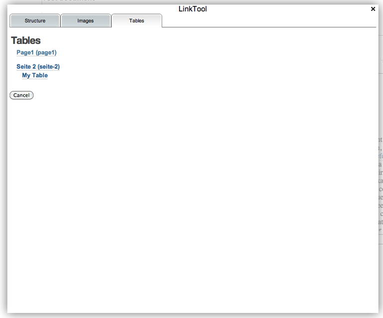

During the refactoring and reimplementation of the Produce & Publish Authoring Environment we came across the fact that the current options for creating links to other content pages inside Plone are pretty poor. Content authors often need to reference to images, headings or tables across content-pages. References are need in order to generate references inside a PDF document like "See image #" or "See table #...on page ..."
One part of the solution is to create a stable internal IDs for all linkable parts of a page. While saving a Plone content page we will insert IDs for tables, images and headings (h2...h5 elements) if not present so far. In order to simplify and unify the handling of links to other content pieces we create a new TinyMCE pluging - the Produce & Publish link tool. The usage is similar to the standard PloneLink tool: you highlight a piece of content that should be linked and click on the Linktool icon from the TinyMCE toolbar.
The link-tool will show linkable pieces of contents of the current content project within the Authoring Environment grouped by structure, images and tables.
The structure view shows all content pages of the current projects and their structure (h2...h5 tags). Clicking on a structure element will insert a link to this page element.

Images are display in the same way: for each content page you will see a list of images (thumbnail size)
Links to tables can be inserted through the table view. To identify tables we use the table's caption or summary.
The look & feel is still pretty basic but the functionality is there and the overall outcome for a half-day of work is a major win.
Writing a TinyMCE plugin for better management of links to anchors for Plone 4
Produce & Publish Authoring Environment 2.0 needs a better management for links to anchors in Plone 4.
ZOPYX is seeking support for writing a TinyMCE plugin for Plone.
See here
As part of a new project I am looking into the fullcalendar integration with Plone.
There are currently four different modules available for Plone which basically provide the same functionality:
- zettwerk.fullcalendar
- Solgema.fullcalendar
- ftw.fullcalendar
- collective.js.fullcalendar
I could not find any major difference among those modules - neither functionality differences nor visual differences.
Why the hell do we need four packages?
Every company seems to have enough resources reinventing the wheels on its own?
Do I have to waste my time as an integrator for checking four packages myself.
Why can't you guys work on one package supporting fullcalendar?
Being slightly pissed of with too many options basically doing the same...
Produce & Publish update
Produce & Publish is both a platform and a framework for authoring and generating documents in high-quality and various output formats. The primary focus of the platform is PDF but it also supports office-formats like Open-Office, Word, RTF and most popular eBook formats. Client connectors integrate your existing systems like content-management-systems, portals or native applications through a standarized API with the Produce & Publish server making the platform accessible within your company or institution. The Produce & Publish Authoring Environment gives you access and full control to content, look & feel and the publication process through a single web-based user-interface. The flexible and open API make Produce & Publish the perfect choice for Web-to-Print applications for generating documents based on dynamic data.

This a short update on the state of our Produce & Publish platform for Plone.
Some days ago we launched the new DGHO Onkopedia site which uses our Produce & Publish Authoring Environment heavily.
After one year with several Produce & Publish projects I came to the point where different customer requirements made a major refactoring of some parts of conversion pipeline necessary.
Right now I am working on a much simpler architecture for the Produce & Publish Plone Client Connector and the Authoring Environment itself. Besides the more lean and flexible architecture, a number of new features will appear with the next major release (scheduled for early summer this year):
- a document structure introspector
- an image introspector
- single-source publication for PDF and Web
- flexible aggregation of content
- HTML publishing: either a single (long) HTML document or chapter-wise HTML documents
- HTML publishing: consistent enumeration of tables and images across chapter-wise HTML document
- HTML Publishing: flexible navigation within splitted documents (previous-next navigation)
- PDF generation: automatic table and image listings
- PDF-per content project or per-chapter or both
- (optional) auto-archiving of published content
This new version of the Authoring Environment will support Plone 4.0 or higher (no Plone 3.X support any more) and will use chEditor as new default editor.
As part of a customer project we had the task to sync data between a Zope 2 application with a Sharepoint server.
Data in Sharepoint is organized as list structures. A list can be considered as a folderish object where the list defines a schema of fields and all items inside the list provide the fields as content (comparable to a Plone folder containing only content of one particular type but the definition of the schema is local to the list/folder).
Sharepoint provides access to its data through SOAP. After some heavy fighting with NTLM authentication and the suds SOAP module for Python I came up with a first version of our Sharepoint connector haufe.sharepoint. haufe.sharepoints right now implements a minimal set of methods in order to manipulate lists in Sharepoint over SOAP:
- retrieve Sharepoint list definitions
- retrieve all list items
- add list items
- delete list items
- update list items
My obligatory rant
The Sharepoint SOAP API is such a piece of crap - at least for three reasons:
- non-speaking error messages like "Value out of range" - totally useless because Sharepoint was a blackbox in our project with no access to logs etc. (except through some external Sharepoint consultants)
- a crappy SOAP API - in many cases the API requires to pass in additional parameters as XML - totally insane.
- some API methods just don't work as expected - queries defined through the CAML query language are just ignored without further error messages
Produce & Publish Lite - PDF for the poor Plone soul
Produce & Publish Lite fills the gap between SmartPrintNG and the Produce & Publish components
I am pleased to announce the availability of Produce & Publish Lite.
Produce & Publish Lite can be considered as the replacement of SmartPrintNG and the little brother of the Produce & Publish product family (the Plone client connector in particular).
It implements a subset of the Produce & Publish Plone client connector:
- it's free (as Apache FOP is free as well)
- supports registration of arbitrary PDF templates and resources (same as with the Produce & Publish Plone client connector)
- implements the same API as the Plone client connectors
- supports Apache FOP only
- does not support the Produce & Publish server (conversions happen directly within the Plone process)
- no dedicated UI (as known as in SmartPrintNG
Do not expect the quality and features that are available with the standard Produce & Publish products.
The standard Produce & Publish products remain focused on high-quality PDF generation and enterprise-level functionality.
Pre-announcing zopyx.versioning
zopyx.versioning - a new scalable versioning solution for Zope and Plone
vs.dashboardmanager
An extension to collective.portletpage and a "remote dashboard administration" tool
We just released vs.dashboardmanager.
vs.dashboardmanager provides a templating mechanism for dashboard pages and a push mechanism for transfering portlets of dashboard template pages into the dashboard of individual site members or all members of a Plone group.
Consider vs.dashboardmanager as a kind of remote adminstration tool for dashboards.vs.dashboardmanager should be compatible with both Plone 3 and Plone 4.
Restoring an older state of arbitrary Zope objects
Deleted some Plone folder lately? Undo not working? Continue with reading...
It is well-known that the Undo functionality of Zope (as as wrapped through Plone UI) usually does not work when other transactions happened in-between. Common use-case: you deleted some content (e.g. a Plone folder or a Plone document) some days ago and you need it back (it's usually the boss messing up company contents and then yelling days later at you to get the content back).
You friendly helper is dm.historical (one of the few Dieter tools I really appreciate).
Here is the blueprint how to recover removed content from a ZODB storage. We assume that we are running some Plone site and want to recover a folder originally located under /plone/myfolder and now it is gone and you want it back.
- Add dm.historical to your buildout (eggs section and re-run buildout)
- Start your instance in debug mode (bin/instance debug) and after loading type the following on the console:
from DateTime import DateTime
from dm.historical import getObjectAt
site = getObjectAt(app.plone, DateTime('2010-08-05 14:00:00')) folder = site['myfolder']
folder.manage_exportObject()
That's it.
Keep in mind that you can not restore object versions older than the timestamp of your last ZODB pack operation. So when you packed one week ago (with the option keeping the revisions of the last seven days) you will not be able to restore revisions older than two weeks.